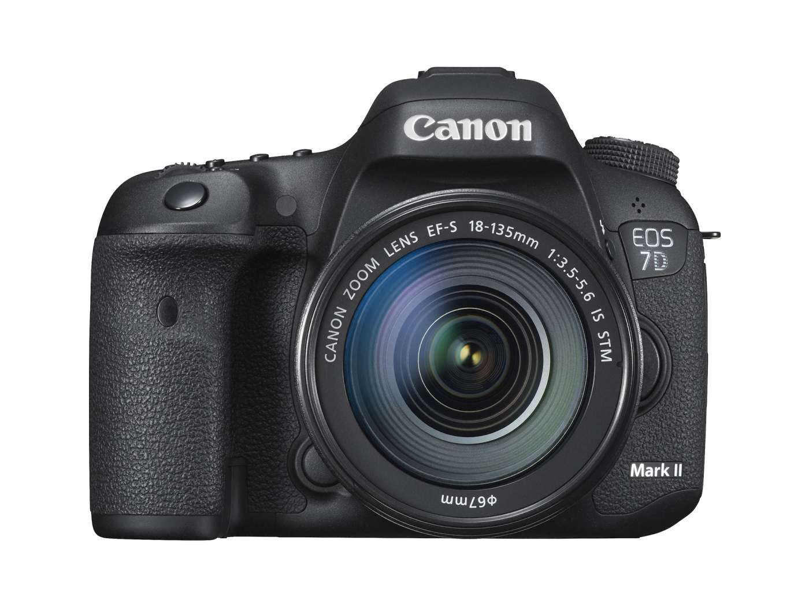
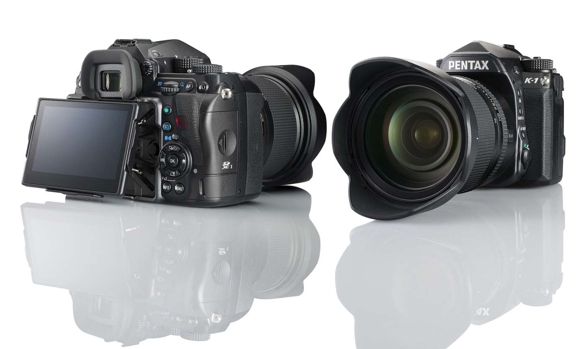
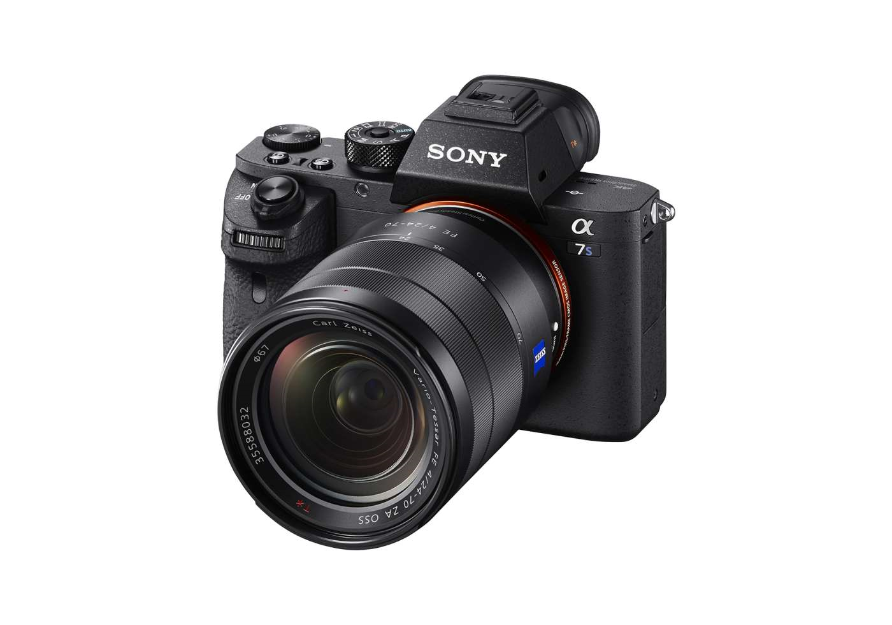
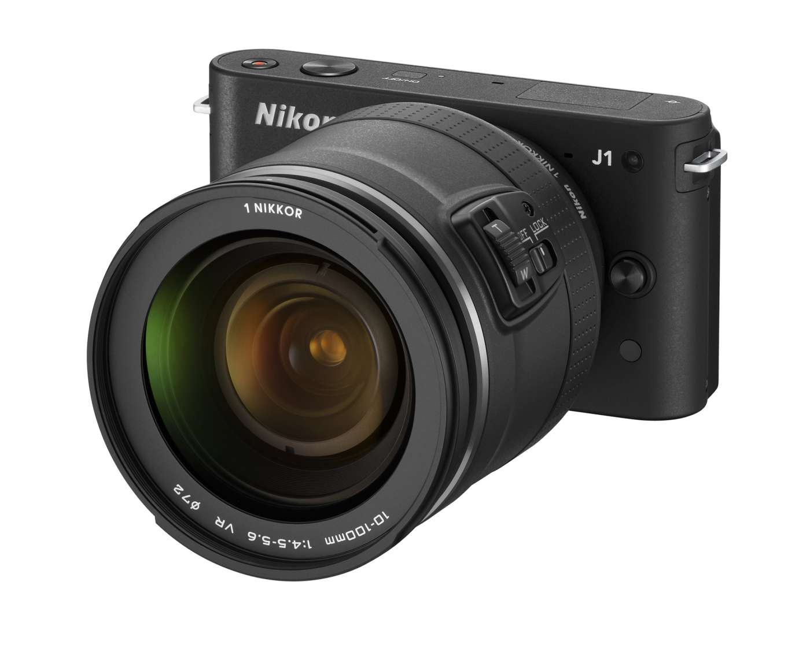

Photography Gear Guide : Cameras
Cannon 7-d MKIII

About Cannon 7-d MKIII
The original 7D brought high burst rates to semi-pro photographers when it was launched in 2009 and the 7D MkII built on this success in 2014 when it upped burst rates to 10FPS and offered sports-minded Canon shooters 20-megapixel files. However, technology moves on and the 7D MkII’s big rival, the Nikon D500, has a number of advantages in the battle for the APS-C DSLR crown.
What we’d like to see: Give us more megapixels, a faster burst rate and 4K video. What’s more, the 7D MkIII should definitely feature a tilting or vari-angle LCD.
Pentax K-1 MkII

About Pentax K-1 MkII
Pentax shocked the photo industry when the brand released its first full-frame DSLR, the K-1, in early 2016. Not only did the camera boast a massive 36-megapixel sensor, but it was also innovative, featuring a cool LCD on movable stilts and its super tough weatherproofing won over photographers who work in the field during harsh conditions. Better still, the K-1 was incredibly competitively priced, and meant newcomers to photography could access ultra high resolution files without breaking the bank.
What we’d like to see: The build quality was always great with the K-1, but for the K-1 MkII, we’d like to see an even bigger jump in megapixels (hopefully around 45 to 50-MP) and the addition of 4K video.
Sony a7SIII

About Sony a7SIII
Sony’s current a7S, the a7SII, set new standards in sensitivity when it launched in 2014 and boasts a mind blowing ISO range of 50 to 409600. This incredible ISO range opened up new creative windows for both photographers and videographers, especially in the field of astrophotography.
What we’d like to see: Come on Sony, we know you can push ISO levels even further and would love to see the a7SIII offer an even higher ISO range, along with an improvement on the 12-megapixel resolution.
Nikon and Canon full-frame mirrorless

About Nikon and Canon full-frame mirrorless
It’s been talked about on rumour sites, various patents have been submitted and the general opinion is that Canon and Nikon surely can’t wait much longer to launch a full-frame mirrorless camera that will compete with Sony’s a-series. Nikon’s formative mirrorless models, such as the J1, arguably struggled to make an impact, though Canon’s existing mirrorless cameras, such as the M5 and M6, have fared better. It’s simple though, photographers using both brands have been holding out for full-frame versions.
What we’d like to see: An awesome, professional-level full-frame mirrorless from both brands so they can battle it out. Big resolution, fast burst rates and awesome 4K video.